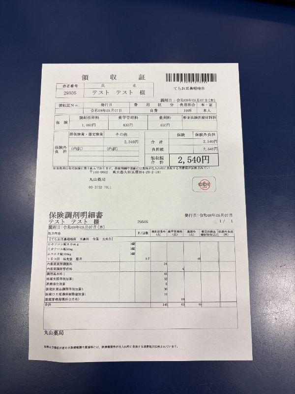
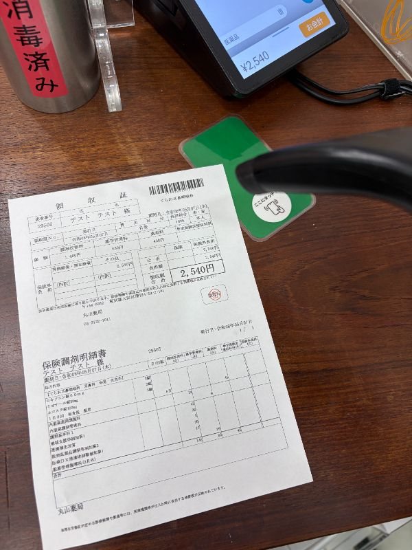
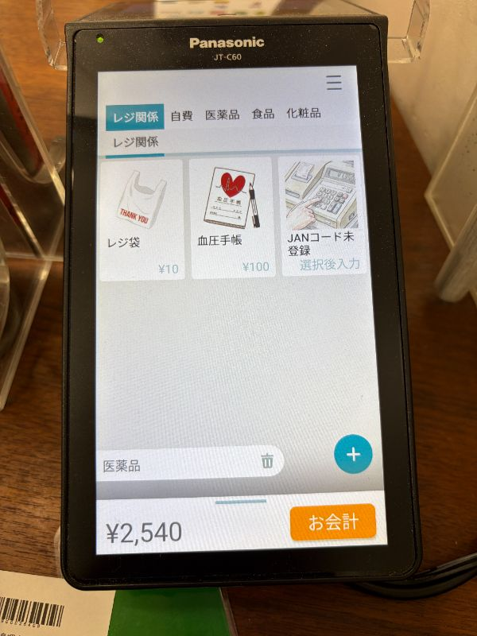
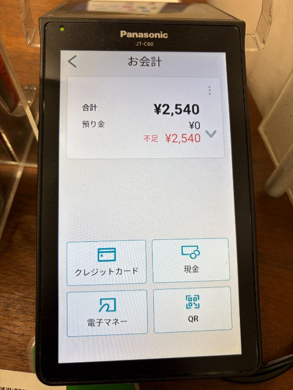

💳 お会計の基本フロー

1領収書のバーコード確認
領収書右上のバーコード（non-plu）で金額を読み取ります。
▼

2バーコードの読み取り
stera terminalに接続されているバーコードリーダーで、バーコードをスキャンします。
リーダー本体の裏側にあるボタンを押すと赤い光が出るので、バーコードに当てて読み取ってください。
※OTCなどの物販がある場合も、同様に商品のJANコードを読み取ります。
▼

3金額の確認と「お会計」ボタン
stera terminalの画面に読み取った医薬品と金額が表示されます。右下のオレンジ色の「お会計」ボタンをタッチします。
▼

4支払い方法の確認と選択
患者様にご希望の支払い方法をお伺いし、該当するボタン（クレジットカード、現金、電子マネー、QRなど）をタッチします。
電子マネー：iD、楽天Edy、交通系IC、QUICPay、WAON、nanaco
QR：d払い、PayPay、メルペイ、au PAY
▼
5QRコード決済の読み取り（QR選択時）
💡 ワンポイント
QR決済の場合、ハンドスキャナーではなく本体カメラを使います。
患者さんにコードを出してもらい、ステラターミナルのフロントモニター上部のカメラにかざしてもらいます。